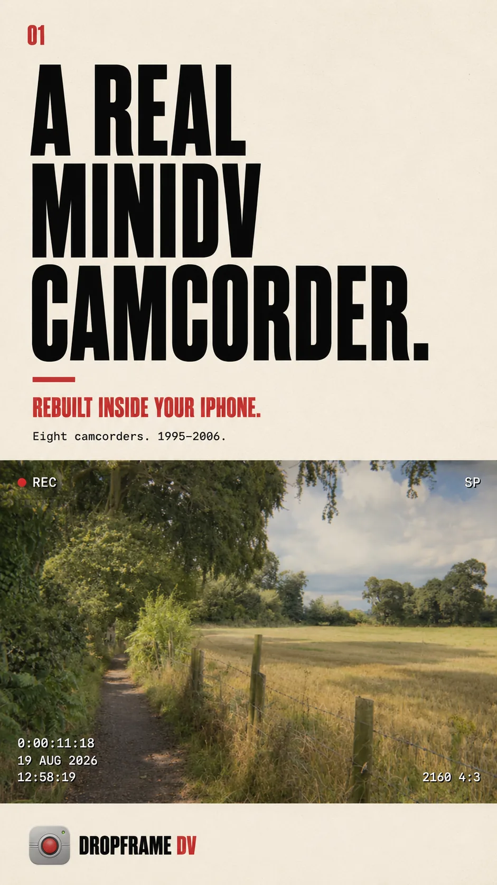
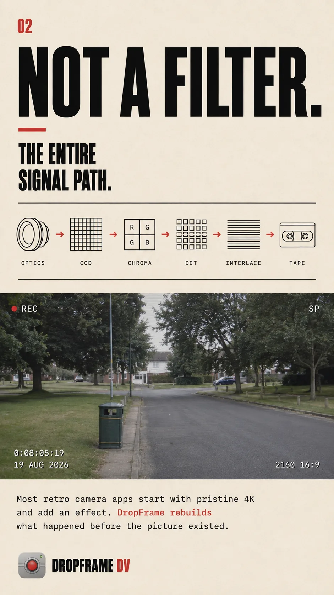
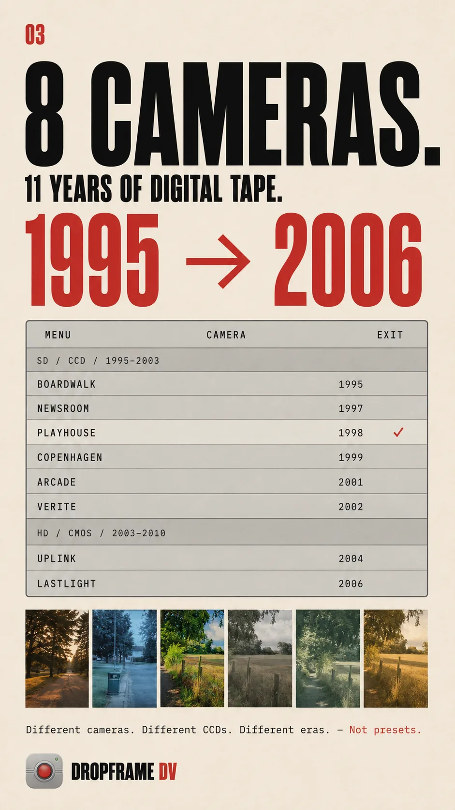
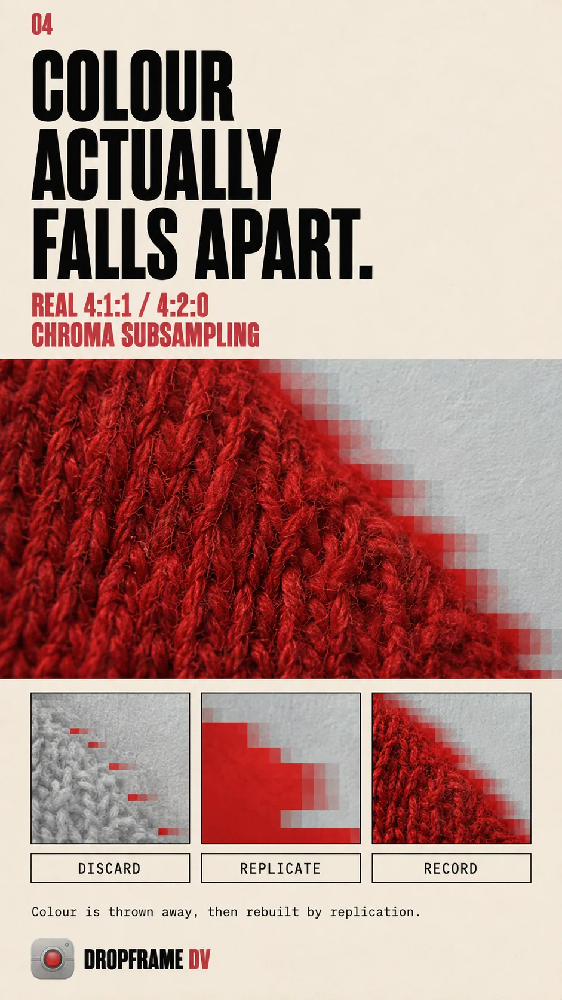
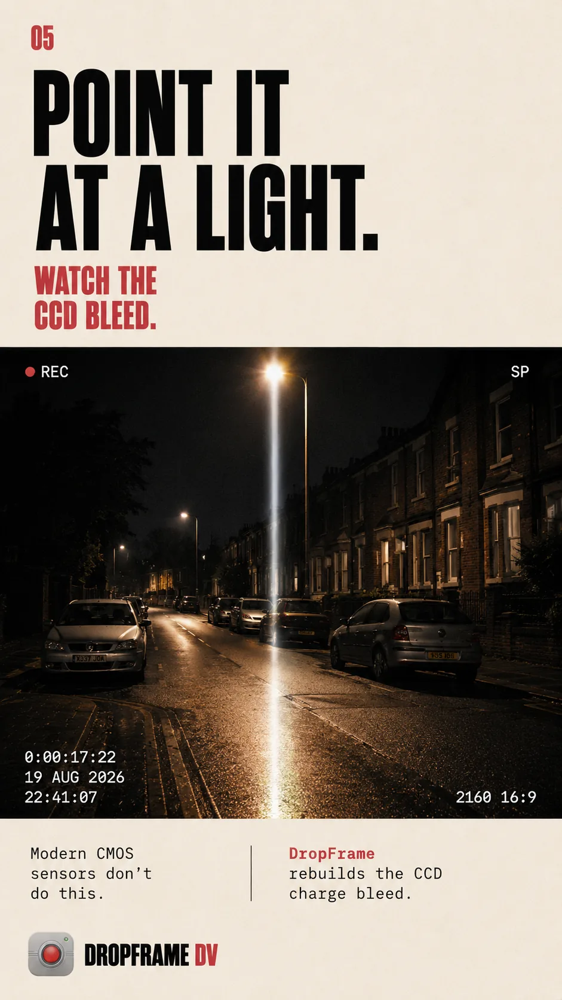
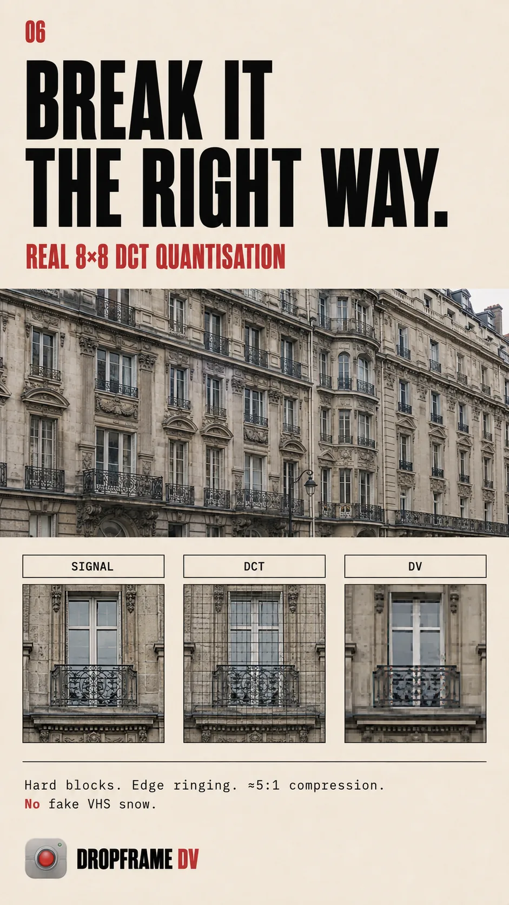
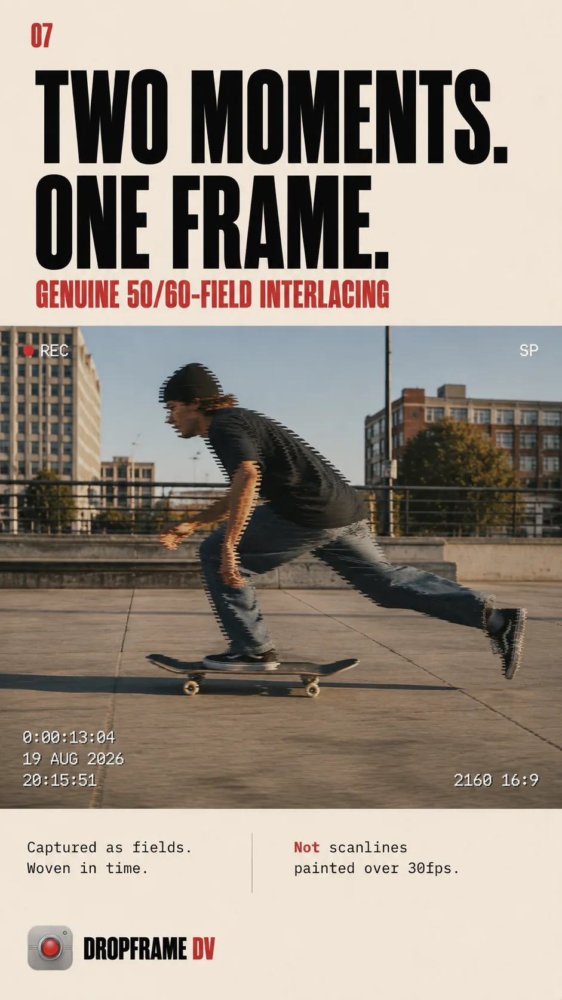
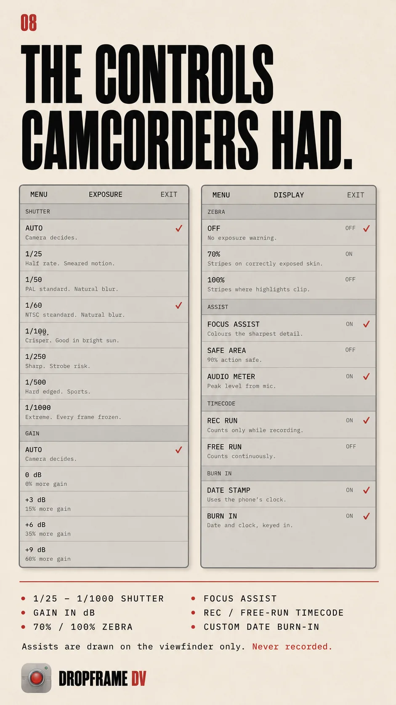
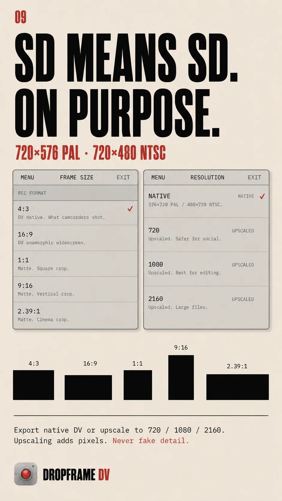
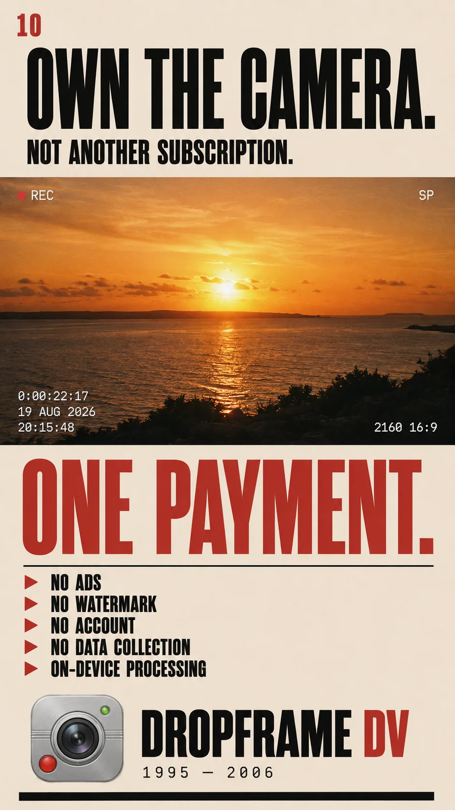

Not a filter. Dropframe DV rebuilds the entire signal path of a 1990s camcorder — optics, CCD sensor, tape codec and all — and runs your camera through it in real time.
Every frame here came out of the app itself — no mock-ups, no retouching. Swipe through.










Dropframe does what the camera did, in the order the camera did it. That order is the whole thing: sharpening after colour subsampling looks wrong, and subsampling after compression looks wrong. Get the sequence right and it stops reading as an effect.
Each one deconstructed into what actually differs: colour bias, dynamic range, motion cadence, optical character and digital artifacts. The names describe the work made on them, not the model numbers.
Every control existed on a real tape-era camcorder. Shutter and gain rather than ISO and aperture, because that is what the dial said. The capability is professional; the vocabulary is period.
I fell in love with cinema as a teenager in the nineties and knew I wanted to make films. The cost made it impossible. Celluloid stock and processing were simply out of reach.
Then MiniDV arrived, and with it a camera I could actually afford. Filmmakers I admired were already there: Lars von Trier, Danny Boyle, David Lynch, Richard Linklater. Dancer in the Dark, 28 Days Later, Inland Empire, Tape. None of them apologised for the format — they used it deliberately, for realism and for speed.
Modern cameras are extraordinary. Phones, DSLRs, camcorders — all pristine, all ultra HD, all effectively perfect. But I miss how those old cameras saw. The rawness, the limits, the way the image fell apart at the edges and told you something by doing it. And the cameras themselves are getting harder to find every year.
Dropframe DV puts them back in your hand: a modern capture device, looking through old eyes.
— Connor Clements
No weekly billing, no ads, no watermark, no account, no data collection. Everything runs on your device. Universal purchase across iPhone and iPad.
The iPhone app is acquisition — a camcorder you carry. The Mac app is conversion: drop in anything you already shot on any camera, and it comes out as genuine DV. Motion is synthesised to the real field rate, so 24p becomes true 50i rather than scanlines painted over 24 frames.
ProRes out, a .cube LUT for every camera, batch queue. The same eight cameras from the same shared code, so a shot looks identical whichever app made it.